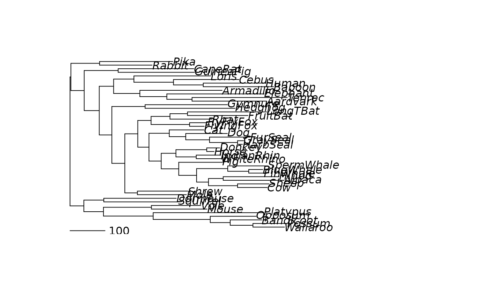

parsimony_edgelength and acctran assign edge length to a tree where
the edge length is the number of mutations. parsimony_edgelengths
assigns edge lengths using a joint reconstruction based on the sankoff
algorithm. Ties are broken at random and trees can be multifurating.
acctran is based on the fitch algorithm and is faster. However trees
need to be bifurcating and ties are split.
Author
Klaus Schliep klaus.schliep@gmail.com
Examples
# lower number of iterations for the example, to run time less than 5 sec.
treeRatchet <- pratchet(Laurasiatherian, minit=5, k=5, trace=0)
# assign edge length (number of substitutions)
treeRatchet <- parsimony_edgelength(treeRatchet, Laurasiatherian)
plot(midpoint(treeRatchet))
add.scale.bar(0,0, length=100)
